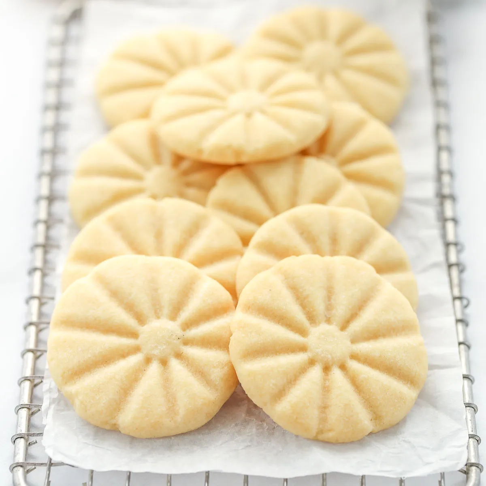

Shortbread Cookie Recipe!
Learn how to make traditional shortbread cookies!

Ingridents
Tools
- Rubber spatula
- Metal spatula
- Large mixing bowl
- 4 teaspoons
- Dry mixing cups
- Whisk
- Electric Mixer
- Fork
- 2 wire racks
- 2 medium baking sheets
- Parchment paper
- Oven mits
- Stove
- Kitchen timer
Instructions
- Preheat the oven to 350ºF (177ºC)
-
In a large mixing bowl, beat the butter until creamy with an electric
mixer. If you don't have a mixer, beat vigorously by hand.
- Add the icing sugar and continue beating until fluffy.
-
Scrape down the bowl and add the cornstarch and flour, beating just
until combined.
-
Using a spoon, scoop out a ball of the dough and drop onto an ungreased
or parchment lined baking sheet 2-5 cm apart. Makes approximatley 12
cookies.
-
Press gently with a fork and placed candied cherry, chocolate or
sprinkles of each unbaked cookie.
- Bake for 10 - 12 minutes. Do not over bake.
- remove from baking sheets and cool on racks. May be frozen.
-
these are delicate, so gently put them into a ait-tighy container or on
a plate for serving.